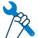

Від налаштувань до профілактики — спрощуємо та захищаємо ваше цифрове життя
Потрібно під’єднатися до інтернету, налаштувати Wi-Fi, подружити принтер із ноутбуком, розібратися з поштою або видалити віруси? Ми допоможемо. Коли все працює — стежимо, щоб так і залишалося.
Надійність — це не лише «пофіксити поломку». Ми й запобігаємо проблемам.
З чим допомагаємо

Помилки та збої
Збої програм і системиПроблеми з інтернетомПринтери та сканериПошта та OutlookСмартфони й планшетиWindows або Mac
Налаштування і допомога
Домашні мережіWi-Fi та роутериПідключення нових пристроївПоради та навчання
Профілактика
АнтивірусВидалення шкідниківРезервні копіїТюнінг і прискорення ПК
Чому PortGuard IT?
Наші клієнти знають: ми не зупиняємося, доки проблема не вирішена. Підключаємося віддалено, пояснюємо доступно і надаємо підтримку, коли вона потрібна найбільше. Навіть коли все працює — допомагаємо зберігати стабільність та безпеку.
Приєднуйтесь — зробимо технології простими та надійними.